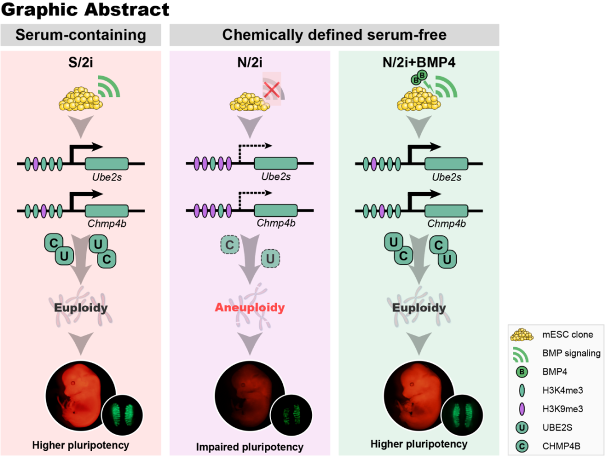

BMP4可调控下游靶基因Ube2s和Chmp4b来维持小鼠胚胎干细胞发育潜能
BMP4 preserves the developmental potential of mESCs through Ube2s- and Chmp4b- mediated chromosomal stability safeguarding

胚胎干细胞(embryonic stem cell, ESC) 是在体外建立起来的一种具备自我更新和三胚层分化能力的一类干细胞。良好的体外培养条件对于干细胞特性的维持至关重要，不仅显著影响细胞的转录组学和表观组，还进一步影响细胞基因组稳定性，增殖以及体内外分化能力。传统的小鼠胚胎干细胞培养在基于血清（FBS）的体系中，但由于血清批次不稳定和成分信息不明确等因素，可造成不同实验室或同一实验室不同阶段进行的胚胎干细胞体外培养存在差异，且血清体系中不明确的成分可引起冲突的细胞信号刺激，使得该条件下的胚胎干细胞呈现显著的异质性。因此，成分明确的无血清培养体系被建立并广泛用于人或小鼠胚胎干细胞培养。目前，对于小鼠胚胎干细胞而言，应用最广泛的是2008年Austin Smith实验室建立的基于N2/B27+2i（GSK3bi，CHIR99021和MEKi，PD0325901）培养体系（NB/2i），一般认为该条件下的胚胎干细胞呈现出 “ground state” 状态，具备良好的发育潜能【1】。然而，近年来无血清培养体系被揭露会引起DNA甲基化异常擦除，损害细胞端粒的稳定性并最终损伤细胞发育潜能。在该体系下，细胞仅10代左右的培养即不能通过胚胎干细胞分化潜能验证金标准的考核（四倍体补偿实验：即体外培养的胚胎干细胞可通过该实验形成一只完整的小鼠，小鼠中所有的细胞均由培养的细胞分化而来）【2,3】。
无血清体系中的MEKi引起的基因组不稳定及不可逆的DNA低甲基化状态被认为是造成该缺陷的主要原因，通过降低MEKi浓度至1/5，或改用MEKi为SRCi（CGP77675）可较为有效地维持胚胎干细胞的多能性。然而，这些缺陷并未在传统的血清培养体系中被观测到，提示无血清培养体系仍然有待改进。此外，上述研究认为MEKi是主要“背锅侠”，却有意或无意地忽略了血清与无血清体系中其他多个差异要素（如血清及基础培养基（前者采用DMEM，后者采用DMEM/F12、Neurobasal、N2和B27））。因此，找到造成胚胎干细胞发育潜能缺陷的原因，不仅将有助于优化胚胎干细胞的体外培养条件，还将有效提高或维持干细胞的质量从而助力于干细胞治疗等临床应用领域。
2022年2月11日，同济大学生命科学与技术学院高绍荣、陈嘉瑜和江赐忠课题组于Protein & Cell 在线发表了题为BMP4 preserves the developmental potential of mESCs through Ube2s- and Chmp4b- mediated chromosomal stability safeguarding 的研究论文。这项工作揭示了骨形态发生蛋白BMP4对于小鼠胚胎干细胞多能性的维持有显著的促进作用，在无血清培养体系中添加BMP4 可以适当激活 BMP 信号通路，进而上调无血清体系中受损的下游靶基因Ube2s和Chmp4b表达，来保障小鼠胚胎干细胞的染色体完整性和增殖能力，并进一步提高并长期维持小鼠胚胎干细胞的体内发育潜能。
在本研究中，作者将同一株细胞系分别培养在血清（S），血清/2i（S/2i）和无血清（N/2i）体系中，检测同一代数下不同培养条件对同一株细胞多能性的影响。研究发现，血清体系下2i的使用可以极大提升细胞的多能性，表现为极佳的体内发育潜能（高嵌合率），而无血清体系却严重削弱了2i的这一作用。无血清N/2i相较于血清体系S/2i下的胚胎干细胞表现出增殖慢，核型异常，低皮肤嵌合率和低生殖系嵌合率等表型，且不能通过四倍体补偿实验获得发育至成年的小鼠。通过比较两种体系下的细胞转录组，发现BMP，TGFβ和AKT等信号通路在无血清体系中呈现显著下调。为明确哪条信号通路与表现出的细胞多能性缺陷有重要关联，作者进行了筛选试验，将可激活相应通路的重要分子分别添加在无血清N/2i体系中，从而检测该通路的激活对胚胎干细胞染色体稳定性、细胞增殖及发育潜能的影响。研究结果表明，BMP通路的激活具有显著效果，其中BMP4最优并显著提高了无血清体系下胚胎干细胞的分化潜能，细胞可通过金标准的检验，这揭示了BMP信号通路在无血清培养体系中对维持细胞的发育潜能和保障染色体的完整性发挥了重要作用。
为了深入探究BMP4改善细胞缺陷的内在机制，作者通过聚焦核型和增殖异常表型的转录差异分析发现了Ube2s和Chmp4b两个靶基因，并发现BMP4的添加可引起两者基因调控区域组蛋白修饰的改变从而激活基因的表达。敲降或短期的诱导敲降Ube2s或Chmp4b均可以引起细胞增殖速度减慢，核型异常率增加及体内发育潜能受损，表现为三胚层分化异常和极低的嵌合率。此时，BMP4的添加已不能恢复该受损表型。此外，过表达实验也证实无血清体系下两者的过表达均可修复相关受损表型。值得注意的是，BMP4对无血清体系中的胚胎干细胞多能性的改善作用，不同于已报道的通过操纵ERK通路来实现（降低MEKi浓度或采用SRCi），也不影响2i条件下的DNA低甲基化状态，但其对胚胎干细胞发育潜能的提升最优。
同济大学博士研究生王明珠，赵堃和刘孟为本文的共同第一作者。同济大学江赐忠教授，高绍荣教授及陈嘉瑜教授为本文的共同通讯作者。
【附课题组手记】
如何在体外条件下维持细胞多能性，是一个老生常谈的话题。2017年起多篇研究指出了2i中MEKi对细胞多能性的损伤作用，然而在这一缺陷在我们的长期2i应用中并未被显著观察到。由于2i的正向作用大家已经很明确了，因此指出他们的side effect确实很能抓人眼球，我们想指出2i不是背锅侠，反而会落入“nothing new”的窘境。因此，在要不要开展这个研究之初，我们是有纠结的。我们不仅要考虑研究的前沿性和新颖性，也要考虑更实际一点的问题，似乎这个课题“做不大”，学生能不能毕业？而且，彼时我们已经展开了2C和扩展多能性的研究，做这些热点不“香”吗？但是，我们实验室长期从事胚胎干细胞多能性的调控研究，对胚胎干细胞的体外培养及分化潜能检测具有深刻理解，应有责任告诉大家我们的观点，该如何更好地维持细胞多能性，2i到底是不是该背这个锅。有时候，总得做点“傻事”，不是吗？最后，感谢合作者和学生们的努力最终完成了一个较为系统的研究，也感谢Protein & Cell杂志给了我们审稿和发表的机会。
【招聘和招生小广告】
同济大学生命科学与技术学院历史悠久，曾在战火中历尽艰险仍展开发育生物学的教学与科研工作。目前，学院生物学是教育部的“双一流”重点建设学科，其中“干细胞生物学”、“表观遗传学”和“生物信息学”已逐渐成为学院的优势与特色发展方向。我们热忱欢迎海内外优秀学者或学生来我们这里一起品品茶，喝喝咖啡，聊聊科学，共同探索生命的奥秘。